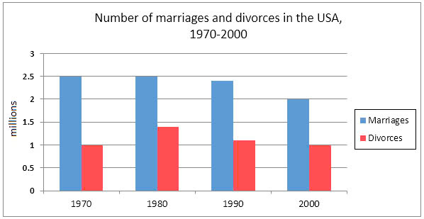

You should spend about 20 minutes on this task.
The charts below give information about USA marriage and divorce rates between 1970 and 2000, and the marital status of adult Americans in two of the years.
Write at least 150 words.
You should spend about 40 minutes on this task.
In many countries, the number of animals and plants is declining.
Why do you think it is happening?
How to solve this issue?
You should write at least 250 words